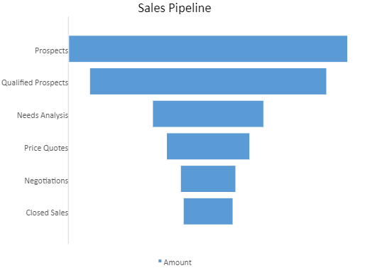

A funnel chart is commonly used to visualize a linear process that contains sequential connected stages. This chart is ideal for evaluating sales cycles in businesses.
The data arranged in columns or rows of a worksheet can be plotted in a funnel chart. Each stage in a funnel chart represents a proportion of the total. Therefore, it takes the shape of a funnel with the first stage being the largest and each subsequent stage getting smaller than the predecessor.
The example shown below depicts the number of sales prospects at each sequential stage in a sales pipeline, and the length of the bar associated at each stage represents the number of customers at each stage. The use case analyzes sales at each stage, beginning with prospects (potential customers) and qualified prospects (clients who express interest in your business) on the top, then down to Price Quotes, Negotiations, and Closed Sales (confirmed clients) in the end.
This code shows how to add a funnel chart in a Spreadsheet.
| JavaScript |
Copy Code
|
|---|---|
// get the activesheet var sheet = spread.getActiveSheet(); //prepare data for chart var dataArray = [ ['Stage', 'Amount'], ['Prospects', 500], ['Qualified Prospects', 425], ['Needs Analysis', 200], ['Price Quotes', 150], ['Negotiations', 100], ['Closed Sales', 90] ]; sheet.setArray(1, 1, dataArray); //add funnel chart var chart = sheet.charts.add('chart1', GC.Spread.Sheets.Charts.ChartType.funnel, 300, 0, 500, 400, "B2:C8"); //set chart title var title = chart.title(); title.text = "Sales Pipeline"; chart.title(title); //set data labels var dataLabels = chart.dataLabels(); dataLabels.showValue = true; dataLabels.color = 'white'; chart.dataLabels(dataLabels); |
|